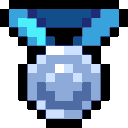
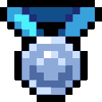

Developers and Creators.
Who is the developers and creators:
• Aniss (OWNER) :
• TIМ0THY YT (OLD OWNER) 
• Aniss (OWNER) :
- re design the ui.
- button and other stef design.
- programing the system (coins, marketplace, chat, account function...).
- hosting the site
- web app developer
- bug & glitch fixer
- Developing the web
-
• TIМ0THY YT (OLD OWNER) 